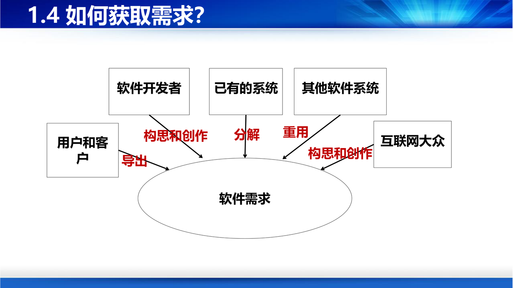

课件第 22 页给了一张非常实用的图：软件需求的来源有六条通道：
用户和客户 ──导出──┐
软件开发者 ──构思和创作──┤
其他软件系统 ──重用──┤──→ 软件需求
互联网大众 ──构思和创作──┤
已有的系统 ──分解──┘
补这张图打破了一个常见误解：需求不是"用户说、你记"。它至少有五条别的来源——你的专业判断（构思创作）、可复用的既有系统、其他系统的接口约束、公众的集体智慧、以及从现有系统里拆解出来的。一个只会"记录用户说的话"的需求工程师，最多做到及格。

课件第 23 页列出六种方法，每一页都给了要点：
| 方法 | 要点 | 适合什么 |
|---|---|---|
| 访谈和会议 | 召开会议、走访人员；参与者包括用户、客户、需求分析人员、质量保证人员 | 关键角色、复杂业务规则 |
| 调查问卷 | 设计问卷了解业务流程、实际操作、用户期望；面向"扮演不同角色的用户" | 用户数量多、分布广 |
| 现场观摩 | 观察业务过程、步骤和输出；业务工作流程及细节 | 用户"说不清但做得出"的隐性知识 |
| 分析业务资料 | 收集重要资料，阅读分析业务相关文档 | 有规章、表单、台账的成熟行业 |
| 软件原型 | 快速构造可运行原型，展示操作流程与交互；用户通过操作判断你是否理解对了，并导出新需求 | 需求隐晦、界面复杂 |
| 群体化方法 | 让互联网上海量开放群体参与，经组织、汇聚、筛选出有价值的需求 | 面向大众的产品、创意征集 |
补"现场观摩"为什么不可替代？ 因为大量业务知识是默会的（tacit）：老员工知道"这个单子要先找主任签字，因为系统里没有这个流程"，但你问他"业务流程是什么"，他只会说系统里那套。观察能拿到"实际怎么干"，访谈拿到的是"应该怎么干"，两者的差就是需求的富矿。
补软件原型是这六种里最"工程化"的一种（PPT 第 28 页）：它把需求讨论从"语言"搬到"界面"上，用户不用再费力描述"我要一个能按关键字组合查询的界面"，直接点两下就能说"这里不对"。这也是第 3 讲把原型单列成一个过程模型的原因。
成立需求分析的联合工作小组（PPT 第 32 页）：成员包括利益相关者（用户）、需求分析人员、质量保证人员；目的是共同工作、加强联系、促进交流、增进合作。
补这个"小组"不是形式主义。它把"多源性"这个特点变成了一种机制：冲突不再靠需求工程师一个人协调，而是在一个有授权的场合里当场协商。
课件第 34 页的定义很长，抓三个关键词就够：用工程的理念和方法指导需求实践；提供过程、策略、方法学和工具；目标是获得准确、一致、完整的需求。
五个环节构成一个闭环：
获取需求 → 分析需求 → 确认和验证需求 → 文档化需求
↑ │
└──────────── 需求管理（迭代）←───────────┘
产物链条也很清楚：初步软件需求 → 软件需求模型 → 软件需求文档。
补注意那个"迭代"箭头。需求工程不是"一遍过"的流水线，而是一个收敛过程：每轮获取—分析—验证都会让需求更准一点，直到收敛到"可以据此设计"的程度。第 3 讲说"迭代模型适合需求难导出的项目"，本质就是把需求工程的迭代放大到了整个开发过程。
课件用三页分别讲，这三条正好对应第 0 章讲过的"抽象—模型"。
（1）抽象：用什么概念去刻画需求？
补这两次抽象转换的本质：结构化方法关注"数据怎么流动"，面向对象方法关注"谁在做事"。前者适合以数据处理为主的系统（批处理、报表），后者适合以实体协作为主的系统（业务流程、交互系统）。今天的主流是 OO，但数据流图在第 5 讲的功能模型里还会出现——它没死，只是退到了辅助位置。
（2）建模：用什么方式把需求写下来？
（3）分析：如何精化和分析需求？
提供策略和手段：一步步精化，建立准确一致的模型，防止漏掉重要需求，发现并解决缺陷。
课件第 38 页给了一句"总纲"，值得原样记住：
出发点和基本原则：尽可能模拟人类习惯的思维方式，使开发软件的方法和过程尽可能接近人类认识世界、解决问题的方法和过程。即使描述问题的问题空间（问题域）与实现解法的解空间（求解域）在结构上尽可能一致。
图上的路径是：问题域对象 → 抽象 → 对象类 →（系统责任对象）→ 抽象 → 对象类 → 类的实例化 → 软件系统。
补"结构上尽可能一致"是什么意思？ 如果现实里是"一个顾客有多个订单，一个订单有多件商品"，那么代码里就应该是 Customer 有 List<Order>，Order 有 List<Item>——名字、层次、关系都照着现实来。这跟结构化方法完全相反：结构化方法会把"下单"拆成 输入校验模块 → 库存扣减模块 → 生成订单模块，这些模块在现实里根本不存在。结构一致的最大好处是：需求变了，代码改的地方和现实中变的地方是同一处。
面向对象方法的四个要点（PPT 第 39 页）：
概念体系与"真假面向对象"（PPT 第 40 页）：
OO = Objects + Classes + Inheritance + Communication with message 面向对象 = 对象 + 类 + 继承 + 传递消息
课件还给了一条判别链，非常适合做选择题：
| 用了什么 | 叫什么 |
|---|---|
| 只用对象和消息 | 基于对象的方法 |
| 还把对象划分为类 | 基于类的方法 |
| 对象 + 类 + 继承 + 消息都用 | 真正的面向对象方法 |
补这条判别链在考试里几乎必出。 记住它的一句话版本："有类没继承，只能叫基于类；有继承没消息，也只是类库。"（比如早期的 VB 用对象和类，但不能继承，属于基于对象/基于类。）